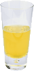
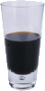

Weekly Specials

Lemon Breeze
The ultimate healthy drink, this elixir combines
herbal botanicals, minerals, and vitamins with
a twist of lemon into a smooth citrus wonder
that will keep your immune system going all
day and all night.

Chai Chiller
Not your traditional chai, this elixir mixes maté
with chai spices and adds an extra chocolate kick for
a caffeinated taste sensation on ice.

Black Brain Brew
Want to boost your memory? Try our Black Brain Brew
elixir, made with black oolong tea and just a touch
of espresso. Your brain will thank you for the boost.
If you liked this article, you might also enjoy:
Where the Term “Booze” Comes From.
History & Lounge Music
Origin of the Word “Cocktail”
There is debate about when the term was first used. According to the
London Telegraph
,
the word is first found in print in a March 20, 1798 satirical newspaper article about what must
have been a hell of a party. Of particular note was the account of drinks
imbibed by William Pitt (the younger), which included “L´huile de Venus,”
“parfait amour,”
and “´cock-tail (vulgarly called ginger.)´” Some challenge whether “cocktail”
in this article truly referred to an alcoholic drink, or something else.
Others point to an April 28, 1803 article from *The Farmer´s Cabinet* in Vermont,
where to drink a cocktail was claimed to be “excellent for the head.”
Regardless, certainly by 1806, the word was being used with its current meaning. In the May 13th edition
of the newspaper *Balance and Columbian Repository*, the editor defined a cocktail as:
“a stimulating liquor composed of spirits of any kind - sugar, water, and bitters.”
During the early 17th century, an animal—particularly a horse—with a docked tail was said to have a
“cock tail.”
By the 19th century, thoroughbreds did not have docked tails, so when a regular horse was entered into
a race, its cock tail was noted—becoming a term synonymous with an adulterated horse. Since horse racing
and liquor go hand in hand, this theory suggests the word “cocktail” soon referred to an
adulterated spirit.
A second theory holds that the name is derived from the term “cock tailings,”
the result of tavern owners combining the dregs (tailings) of nearly empty barrels into a single elixir
sold at bargain prices. This makes sense when you know the spigot of a barrel was
sometimes called a “cock.”
What's Playing at the Lounge
We're frequently asked about the music we play at the lounge—and no wonder,
it's great stuff. Just for you, we keep a list here on the site, updated weekly.
Enjoy.
- Buddha Bar, Claude Challe
- When It Falls, Zero 7
- Earth 7, L.T.J. Bukem
- Le Roi Est Mort, Vive Le Roi!, Enigma
- Music for Airports, Brian Eno